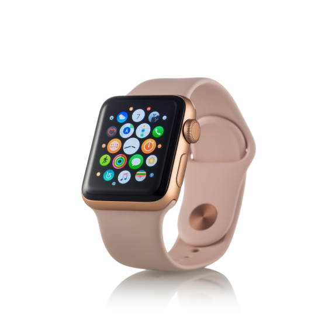

Tamanho da fonte
Reconhecer a estrutura física dos elementos de dispositivos mobile e de consoles
Vamos iniciar os estudos
PlayConsiderando a facilidade de acesso e características do público-alvo como Maria poderá escolher o melhor sistema mobile para lançar o seu game?
Os dispositivos mobile (smartphones, tablets, óculos VR) são considerados verdadeiros computadores portáteis. Logo, são equipados com hardwares semelhantes aos desktops e notebooks, como CPU, GPU, memória, armazenamento em disco, entre outros. Sendo assim, é importante que haja um sistema operacional que faça o controle de todos esses hardwares e permita que você possa utilizar seu aparelho de forma satisfatória. Assim, o objetivo desta UE é apresentar os principais sistemas operacionais mobile atualmente disponíveis no mercado e também o processo de produção de softwares para esses dispositivos.
Para entender sistemas operacionais mobile te convido a um breve contexto histórico, vamos lá?
Em meados dos anos 1990 os telefones celulares se tornaram populares. A princípio eles tinham apenas uma tarefa básica: realizar ligações telefônicas em qualquer lugar.
O software que controlava esses aparelhos era bem simples, pois havia poucas funções disponíveis e o hardware também não exigia algo muito sofisticado. Por exemplo, as telas eram simples, monocromáticas e pequenas. O teclado era físico, semelhante aos telefones fixos, com teclas apenas para números.
No início dos anos 2000, uma empresa canadense lançou um novo dispositivo mobile denominado BlackBerry. Esse aparelho revolucionou o mercado de celulares pois trazia diversas inovações: teclado QWERTY, telas maiores e diversos aplicativos que não se restringiam às ligações, agendas de contatos e alarmes.
Ele trouxe uma gama de softwares para criação de textos, planilhas eletrônicas, entre outros. Isso atraiu, inicialmente, executivos que necessitavam editar uma planilha ou enviar um e-mail de forma rápida, sem a necessidade de um computador. Com o passar do tempo, esses dispositivos se tornaram mais baratos e atraiu a atenção do público em geral.
Devido a alta demanda por esses aparelhos, empresas como Google, Apple e Microsoft lançaram seus próprios sistemas operacionais mobile, dando início à era dos smartphones. Esses sistemas permitiam aos desenvolvedores criarem seus próprios aplicativos e disponibilizarem nos lojas virtuais.
Assim, o mercado mobile foi impulsionado e os telefones deixaram de fazer apenas ligações e se tornaram computadores de bolso. Instituições financeiras, governamentais e de entretenimento passaram a criar aplicativos próprios para essas plataformas, ajudando a popularizá-las. Obviamente que o mercado de games não passou desapercebido, e os estúdios desenvolvedores passaram a criar jogos específicos para mobile.
Inicialmente havia 4 grandes grupos de sistemas operacionais mobile: Windows Mobile da Microsoft, Android da Google, IOS da Apple e BlackBerry OS da BlackBerry. Enquanto Apple e BlackBerry forneciam o sistema operacional exclusivamente para aparelhos próprios, Google e Microsoft permitiam que qualquer fabricante de smartphones utilizassem seus sistemas. Devido à dificuldades operacionais e queda da popularidade, BlackBerry e Microsoft descontinuaram seus produtos e atualmente apenas Google e Apple desenvolvem sistemas operacionais mobile.
Relacione os sistemas operacionais com seus fabricantes:
Apple
Microsoft
Blackberry
Quase lá, você acertou 1/4. Tente novamente!
Parabéns, você acertou todas!
Como abordado, o Android é o sistema operacional desenvolvido pela Google e está presente não somente em smartphones, mas também em tablets, relógios, óculos e centrais multimídia em automóveis.
O sistema Android é disponibilizado gratuitamente aos fabricantes de hardware, tais como Samsumg e LG, e estes podem adaptá-lo de acordo com seus interesses. Assim, um Android Samsung pode ser diferente de um Android LG, porém mantendo seu núcleo e suas funcionalidades. Isso significa que os aplicativos desenvolvidos para Android rodam em qualquer smartphone, independente da marca.
A grande vantagem de se trabalhar com o Android é que mesmo o fabricante do aparelho descontinue sua linha, produtores independentes podem garantir a atualização do sistema operacional a esses aparelhos, garantindo uma sobrevida. Isso não ocorreu com o Windows Phone.
Quando a Microsoft desistiu de manter seu sistema, todos os aparelhos que o utilizavam perdeu sua funcionalidade. Essa flexibilidade explica o porquê do Android ser o SO mais popular: estima-se que 2,5 bilhões de aparelhos sejam equipados com esse sistema. Normalmente a Google lança uma nova versão do Android por ano, e em muita das vezes nomeia suas versões com nome de doces: foi assim com Marshmallow, Lollipop, KitKat, entre outros.
Uma vez que a nova versão é lançada, os fabricantes a adaptam para os seus aparelhos e lançam um pacote de Update. Uma das estratégias dos fabricantes é lançar a nova versão apenas para aparelhos mais novos. Essas novas versões costumam conter novas ferramentas, funcionalidades e correção de falhas críticas.
O iOS é o sistema operacional da Apple e era disponibilizado para toda a linha mobile Apple (IPod, Ipad, Iphone). em 2019 a Apple lançou um sistema exclusivo para o tablet IPad: o iPadOS. Por se tratar de um sistema exclusivo aos aparelhos Apple, o iOS não permite a personalização, como ocorre com o Android.
A grande vantagem dessa exclusividade é que o desenvolvedor pode extrair o máximo de recurso do hardware, uma vez que hardware e software são produzidos pela mesma empresa. Assim, a tendência é que aparelhos Apple com configuração de hardware semelhante a um outro equipado com Android seja mais veloz e eficiente.
Além disso, o foco do iOS é a privacidade do usuário, permitindo total configuração de como os dados são coletados, armazenados e transmitidos. Em relação as atualizações, a Apple não possui um calendário anual, mas disponibiliza novas versões quando necessário.
Uma vez lançada uma nova versão, essa é disponibilizada imediatamente aos aparelhos, tornando-se assim mais seguro em relação às falhas críticas.
Ambos os sistemas possuem bons padrões de segurança, com a criptografia dos dados dos usuários e controle de acesso à câmera e sensores. Como o iOS está mais focado em privacidade, aplicações que envolvem coleta massiva de dados podem não ser tão eficientes nesse sistema.
Por fim, devido ao fato de que o iOS é desenvolvido pela mesma fabricante do hardware, a correção de falhas de segurança tende a ser mais rápida do que em sistemas Android.
A estratégia da Apple é oferecer um longo suporte a atualizações. Isso significa que a vida útil dos aparelhos com iOS é maior do que em Android. Apesar de a Google lançar novas versões de Android todos os anos, a implementação efetiva dessas atualizações depende do fabricante do hardware. Assim, são os fabricantes que definem quais aparelhos podem ou não receber a nova versão, o que diminui a vida útil do aparelho. Por fim, quando há uma falha crítica de segurança, a Google pode atualizar uma versão independente do fabricante.
Aqui entra a principal vantagem do Android sobre seu concorrente. Como possui código-fonte aberto, os usuários de Android podem alterar o sistema, criando novos padrões de design e também novas funcionalidades. Isso não ocorre com o iOS, tornando-se assim um sistema mais rígido e dependente dos desenvolvedores Apple.
Tanto iOS quanto Android permitem que desenvolvedores independentes possam criar aplicativos e oferecê-los em suas lojas.
Os aplicativos nativos para Android são desenvolvidos em linguagens de programação como o Java e o Kotlin, e seu processo de desenvolvimento costuma ser mais complexo devido à quantidade de aparelhos que podem utilzar o app. Isso requer adaptações para tamanho das telas, disponibilidade de sensores, entre outros.
Os apps para iOS são desenvolvidos em Swift e Objective-C e o processo de desenvolvimento costuma ser mais rápido e fácil, pois os programadores não precisam se preocupar com a variedade de dispositivos tal como no Android.
Uma vez desenvolvido, o app precisa ser publicado nas lojas oficiais da Google ou da Apple. A política de aprovação da Apple é mais rigorosa e, consequentemente, os apps para iOS tendem a ser mais seguros. Para se publicar na PlayStore da Google é necessário pagar uma taxa única de US$ 25,00 e na AppStore uma assinatura anual de US$ 99,00 (isso explica o fato de apps para iOS serem, no geral, um pouco mais caro).
Hoje em dia é comum querermos conectar nossos aparelhos entre si. Smartphones, Desktops, SmartTVs, Óculos VR, centrais automotivas, relógios podem estar conectados.
Os dois sistemas oferecem recursos para essas conexões e no iOS esse processo é um pouco mais fácil, pois o fabricante do hardware é o mesmo, outros aparelhos que desejam se conectar com os da Apple só tem um padrão a seguir. Já no Android, como cada fabricante tem a sua versão, a conexão entre aparelhos é mais difícil e algumas funcionalidades podem não estar disponíveis.
Considere as afirmações abaixo e assinale verdadeiro ou falso:
Por dominar o mercado mobile com cerca de 85% dos aparelhos, o sistema Android leva vantagem no quesito games. A maioria dos downloads são feitos por esse sistema, chegando a 75%.
No geral, os jogos são lançados para ambas plataformas e o perfil de usuário é o mesmo, ou seja, um determinado jogo faz sucesso nos dois sistemas. Uma única diferença ocorre em mercados emergentes, como o Brasil. Dentre os inúmeros estilos de jogos disponíveis tanto para Android como para IOS o plataforma 2D é bastante utilizado por iniciantes devido a sua facilidade no desenvolvimento.
Devido ao fato dos dispositivos Apple terem um preço maior, a tendência é que os proprietários desses aparelhos tenham as últimas versões, possibilitando assim acesso a jogos mais pesados.
Novamente devido ao poder aquisitivo, a tendência é que usuários de iOS compram mais itens in-app (compras feitas dentro do jogo, como vida, skin, busters etc).
Um outro fenômeno que ocorre no Brasil é a preferência por jogos off-line, devido ao acesso e valor dos planos de internet mobile. Sendo assim, os estúdios desenvolvedores optam por características específicas quando vão lançar games para essas plataformas. Dê o play no vídeo a seguir e assista a um vídeo sobre exibição de jogo em ambas as plataformas.
O desenvolvimento de aplicativos mobile pode ser feito de duas formas: nativo ou híbrido. O primeiro é desenvolvido para uma plataforma específica, extraindo assim todos os recursos disponíveis no hardware e no sistema, como por exemplo acesso à câmera e sensores.
O segundo modelo independe de plataforma, e são acessados através de navegadores de internet. Em relação a usabilidade, ambos apresentam funcionalidades semelhantes. Temos como por exemplo as redes sociais, tais como Facebook e Instagram, que podem ser nativos ou acessados via browser.
Browser é um navegador que possibilita aos seus usuários estarem aptos, ou seja, habilitados para interagir com documentos HTML hospedados em um servidor da rede. Resumindo é o seu navegador.
Em ambos os casos não há diferença na interação. Mas qual a diferença no desenvolvimento para esses dois tipos? A primeira grande diferença é que o processo híbrido é mais eficiente pois o aplicativo é desenvolvido apenas uma vez e através da responsividade, ele se adapta a todos os tipos de tela.
A grande desvantagem do híbrido é a dificuldade ao acesso a recursos específicos de hardware. Por exemplo, se um aplicativo híbrido necessita do acesso à câmera do smartphone, é necessário um framework para permitir acesso. Isso pode gerar problemas de segurança, deixando portas abertas a softwares maliciosos.
Quer aprender mais? Dê o play no vídeo a seguir que abordará sobre Desenvolvimento de apps.